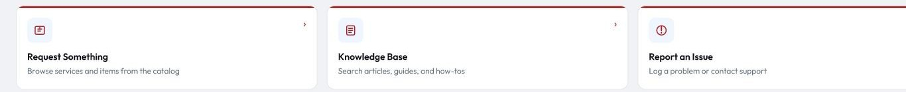
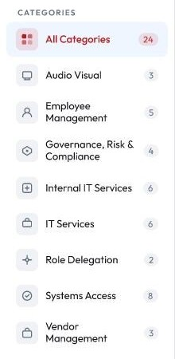
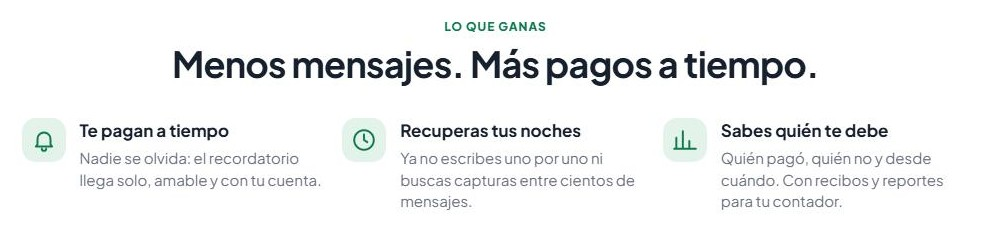
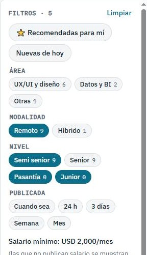

Works by Pedro Taveras, software engineer · 2020 – 2026
Welcome. This exhibition walks through products I have designed and built: an enterprise service portal, a payments product live in production, a computer-vision lab for runners and a job-search engine. Each room shows the finished piece, the details up close, how it works underneath, and a curator's note on what I did.
A full UX redesign and design system for the internal IT Service Portal of Acuity Insurance, built on ServiceNow Next Experience. Every employee uses it for IT requests, access management, knowledge and incident reporting.
IT Service Portal Redesign & Design System
Pedro Taveras, product designer · 2025
Client
Acuity Insurance (internal portal)
Medium
Figma, design tokens, interactive prototype, HTML prototype
Platform
ServiceNow Next Experience
Scale
24 catalog items · 8 categories · 10+ screens
Employee data and configurations anonymized. No confidential information is shown.
The brief
One portal serves a whole company with very different needs. The goal was to make the catalog easy to scan and get people to the right request in as few clicks as possible.
What I did
Rebuilt the information architecture into 8 task-based categories.
Designed a token hierarchy (color, type, spacing, states) and a Figma component library.
Prototyped 10+ screens end to end, plus an interactive HTML request form for developers.
Why it works
One search entry point, three primary actions, live counters for the employee's own requests, and the same card pattern everywhere, so learning one page teaches the rest.
Up close
Details from the design system
01One way in. A personal greeting, one search for articles, services and issues, and the most popular requests as shortcuts.
02The card system. Icon, name, one-line description, category tag and a single "Request" action. Every service reads the same way.

03Three doors. Request something, read the knowledge base, or report an issue.
04Data on the homepage. Open requests, pending approvals, knowledge articles and average resolution time, so employees know where they stand without opening a ticket.
The catalog
Navigation and category pages

05Category rail with item counts.
06All categories. Popular items first; an internal test item is visibly greyed out so it never reaches end users.
07Category page. A header that explains the category, its services, and "You might also need" links to related requests.
II
Room II · Product · full stack · AI
Cobrao
A payment-collection product for the Dominican Republic, where small businesses charge by WhatsApp and bank transfer. Designed, built and launched by me. Live in production.
Cobrao
Pedro Taveras, founder, designer & developer · 2026
Medium
JavaScript, PWA, WhatsApp, AI receipt reading, Docker, Railway, GitHub Actions
Status
v0.9 · 32 automated tests green · first customer in pilot
Tutors, gyms, trip organizers and friends splitting a bill all chase payments by hand: remembering who owes, asking again, checking the bank, keeping count. It is tiring and it strains relationships.
What I built
Automatic WhatsApp reminders before, on and after the due date.
A pay page where clients upload their transfer screenshot; AI reads it and proposes a verdict.
One engine, three modes: recurring classes, trips with seats and deposits, and split expenses.
Design choices
The payer changes nothing about their habits. The owner only taps "Confirm". Money goes straight to the owner's bank: Cobrao never touches it.
How it works
From reminder to receipt
The app
Mobile-first owner dashboard
01Today. Progress ring for the month, what's pending and overdue, and quick actions.
02Reports. Collected today, due this week and a comparison with last month.
03Clients. Search, a filter for who owes, and a status per person.

04The promise, in plain Spanish. Fewer messages, payments on time, and always knowing who owes what.
III
Room III · Computer vision · biomechanics data
RunLab
Running-technique analysis from a single phone video. What normally needs a gait lab runs in the browser, and the video never leaves the phone.
Shown as an illustration while the product is in private development.
The idea
Most runners never get their technique analyzed. A phone video is enough if the analysis is done carefully, and privacy is solved if the video stays on the device.
What I built
An analysis engine on top of pose landmarks: smoothing, calibration, strike detection, angles and distances.
A scored report with diagram and charts, history, pain tracking, shoe mileage and an exercise plan.
A coach/physio area with link codes, athlete lists, notes and assigned exercises.
Data decisions
The server stores numbers only (metrics and reduced series), never video. Reference ranges live in one place so they can be tuned with real data. AI writes the explanation and a 4-week plan once, and it is saved.
The assembly line
Four stations from video to report
IV
Room IV · Data pipeline · automation · AI
Aplicao
A personal job-search engine. It collects remote postings every morning, cleans and ranks them, and rewrites my CV for each one, because reading a post and tailoring a CV is the slowest part of applying.
300+ postings tracked, daily fetch, monthly API quota
Security
Row-level security; user API keys encrypted with AES-256-GCM
The pipeline
A scheduled job pulls postings from a jobs API, removes duplicates, classifies each one by area, work mode and seniority, flags US-only roles and converts every salary to monthly USD.
The AI step
Reads the posting and my master CV, then writes a tailored CV and a short outreach message.
Typed schemas check the output; a guard removes any employer or certification not in my real CV.
One click turns it into an ATS-friendly PDF.
The interface
Filters show live counts, searches can be described in plain language, and each card has one main action. A queue and a stage tracker record every application.
Up close
Filtering and ranking

01Filters with counts. Area, mode, level, date and a salary floor.
02The job card. Match score, normalized tags, and the actions: apply, see the tailored CV, open the posting, mark as applied or discard.
✦
The Annex · commissions and studies
Enterprise, commerce & data
Work for clients and employers, and smaller data projects. Enterprise screens are not shown for confidentiality; each piece is described by what was built.
A-1ServiceNow · workflow · data modeling
Fleet Management
With the Stave team, for a government client · 2026
A trip-request system: an employee requests a trip, it is approved, and the platform creates the follow-up tickets for fuel, tolls and meal allowances automatically.
My part: the data model and reference data (32 provinces, 154 municipalities), new fields, the multi-step request form in UI Builder with searchable location lookups, and tracing why new fields were not being saved.
Lead developer for a made-to-order fashion brand · 2026
The store's catalog had grown messy: duplicated products, languages in the wrong slots and prices in the wrong currency. I audited it and rebuilt it.
Clean SKUs, SEO, category metafields and redirects for every removed URL; fixed inverted English/Spanish content; custom Liquid blocks such as a product grid with clickable color swatches, URL-driven filtering and an Instagram carousel.
Medium
Shopify, Liquid, CSV data pipelines
A-3ServiceNow · UI Builder
Procurement workspace
Consulting work · 2026
A workspace for a purchase-order module, with a multi-variant list page so buyers and approvers each see the columns and actions they need.
Medium
ServiceNow UI Builder, workspace pages, list variants
A-4Python · data viz · personal study
Combustible
Personal project · in progress · 2026
Links my Garmin training data (load, calories, type of effort) to nutrition: macros, micronutrients and a weekly menu built around the training I have planned.
Medium
Python data pipeline, Garmin API, Next.js dashboard
The workshop
Tools used across the collection
Design
Figma, design systems & tokens, prototyping, information architecture, Tailwind CSS
I'm open to remote roles in BI, business analysis, UX/UI and data. B.S. in Software Engineering (UNAPEC), Google Cybersecurity certificate, Scrum Fundamentals. Fluent in English and Spanish. Available immediately.